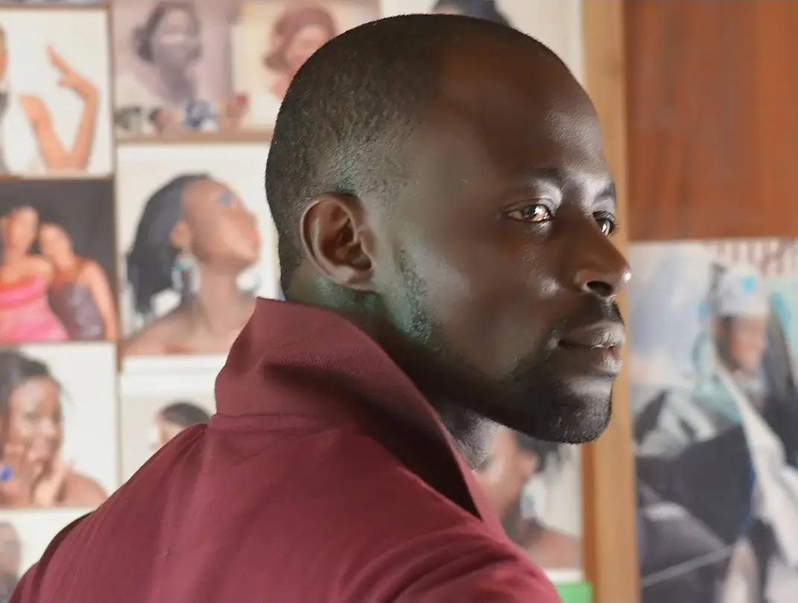

ADEDEJI BANJI OLUSEGUN
Photographer
No 36,3rd Avenue Olorunshogo Estate,
Olainukan B/stop ,Yewa Isawo- Ikorodu,
Lagos-state, Nigeria
Qualification
High school: Ifon Comprehensive High School Ifon
Ose Local Govt
Ondo-State
Working Experience
Lagos State Television: Christmas Funfair 1998-2015.
National Orientation Camp Ikare Ondo state 1998_2017.
Web developer 2022-till date